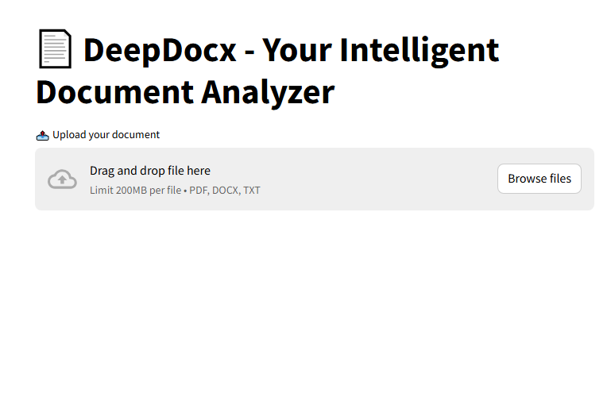
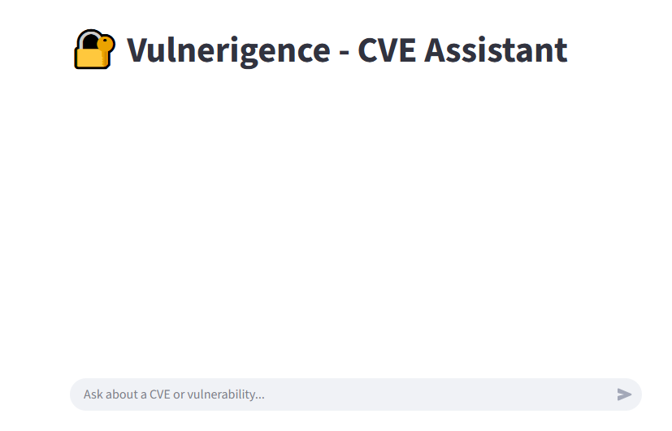

DeepDocx
DeepDocx is an AI-powered document analysis tool that intelligently extracts insights from complex files like SRS documents, research papers, legal texts, whitepapers, and project reports. With multiple analysis modes tailored to different document types, it helps professionals like engineers, researchers, and managers make sense of technical content instantly. Upload your document, ask questions, and get contextual, focused answers—fast and effortlessly.
Tech Stack:
Python, Langchain, FAISS, GroqAPI (LLaMA 3.3), Streamlit
GitHub Repo:
Vulnerigence
Vulnerigence is an AI-driven vulnerability analysis assistant designed for ethical hackers, penetration testers, and cybersecurity professionals. It leverages LLMs and vector search to provide structured, in-depth insights into CVEs (Common Vulnerabilities and Exposures). Users can query about specific CVEs, compare vulnerabilities, or get mitigation recommendations — all in real time.
Tech Stack:
Python, LlamaIndex, Pinecone, GroqAPI (LLaMA 3.3), FastAPI, Streamlit
.png)